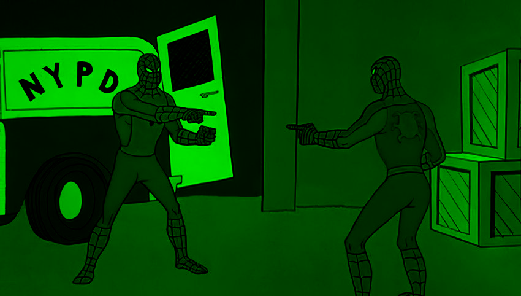

A NATO Minnow Reels From Cyberattacks Linked to Iran
Albania has been the target of repeated digital assaults believed to be linked to its sheltering of an Iranian dissident group on its
soil.
TIRANA, Albania — Customers at one of Albania's biggest banks got a shock shortly before Christmas when a curt text popped up on their
cellphones: “Your account has been blocked. The balance of your account is zero. Thank you.”
The messages, which turned out to be fake, signaled the opening of a disruptive new front in what Albanian authorities, the United States and NATO have identified
as an enormous cyberattack orchestrated by Iran on one of the weakest members of the military alliance.
“It is an attack — an aggression against the sovereignty of one country by another state,” Prime Minister Edi Rama said in an interview in Tirana, the Albanian
capital, calling the assaults “absolutely the same as a conventional military aggression only by other means.”
